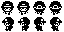
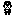
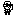
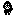
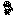
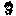

Environments and locations
One tile atlas with eight environments, buildings, interiors and larger fixtures. Simplified black-and-white terrain and props on white ground. The earlier detailed atlas and maps are preserved for comparison.
Combined atlas · 16×32 tiles · 256×512 native pixels
Try the game scale
128×64 pixels, shown at 4×. Each step scrolls smoothly at native pixel size. Use the arrow buttons or focus this preview and hold arrow keys to walk. A checks the doorway or talks to the person ahead. This is a browser scale review.
Village lane
Player · four directions
Chibi proportions: larger head, small body and short feet. Four idle directions and two alternating walking poses per direction, all 16×16 with a one-pixel white outline and transparent background. Walking follows the smooth scrolling and stops at rest.
Idle sheet · 32×32 · Walking sheet · 64×32



People · 16×16 sprites
Eight monochrome characters with a one-pixel white outline and transparent background. NPCs currently have down-facing idle frames. The player above has four directions and walking animation.






Doors at player scale
Current exteriors use 3×2 tiles (48×32 pixels). The doorway occupies one tile, with the 16×16 player on the approach directly below. Face up and press A for the current interaction convention. These markers are review data; entrance scripts are not installed.
Environment areas
Larger fixture assemblies
Bridges in both directions, natural pond banks, waterfall, dock, marsh boardwalk, larger trees and rocks, shrine, camp and well. All are assembled from 16×16 cells.
Fixture showcase · Tiled map · Combined atlas

Buildings and interiors
Cottage, woodland cabin, village shop and stone tower. Interiors cover a cottage room, shop, ruined shrine and crystal cave. Buildings use 3×2 tiles in their preserved atlas slots; interiors remain 4×4. Small props stay 1×1, while larger objects can use 2×2 assemblies without changing the 16×16 map grid.
Overworld map · Tiled JSON · Interior map · Tiled JSON · Native atlas · Generated concept